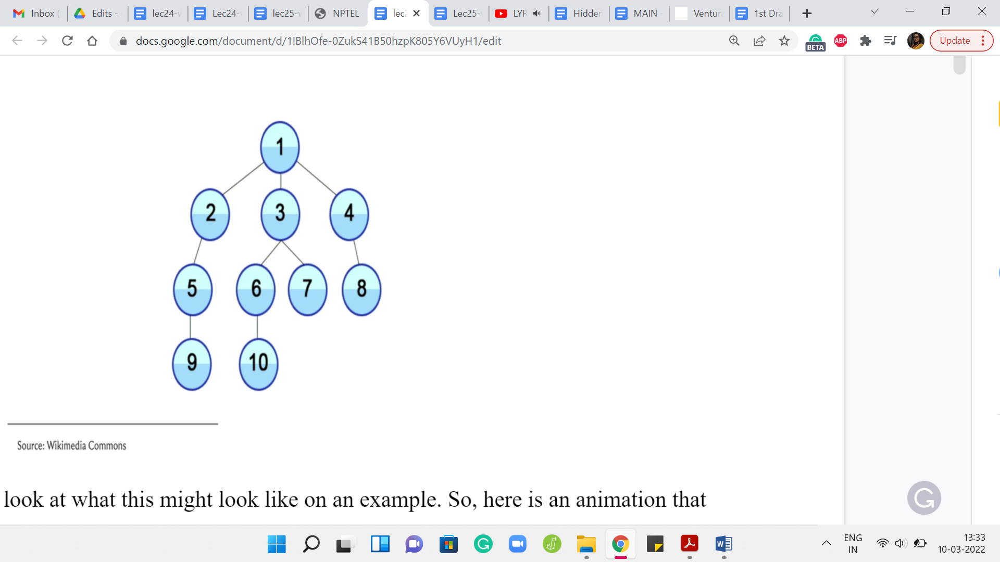
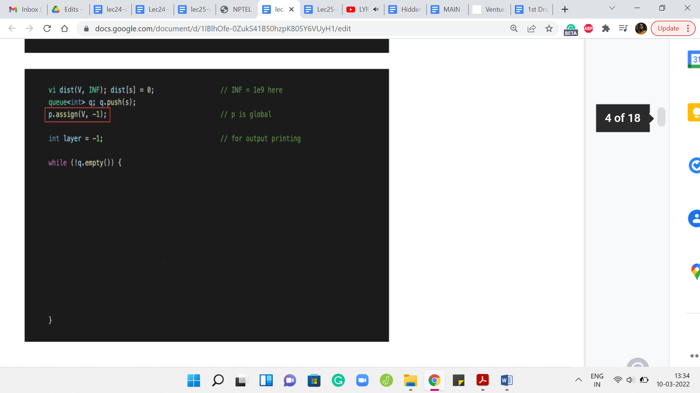
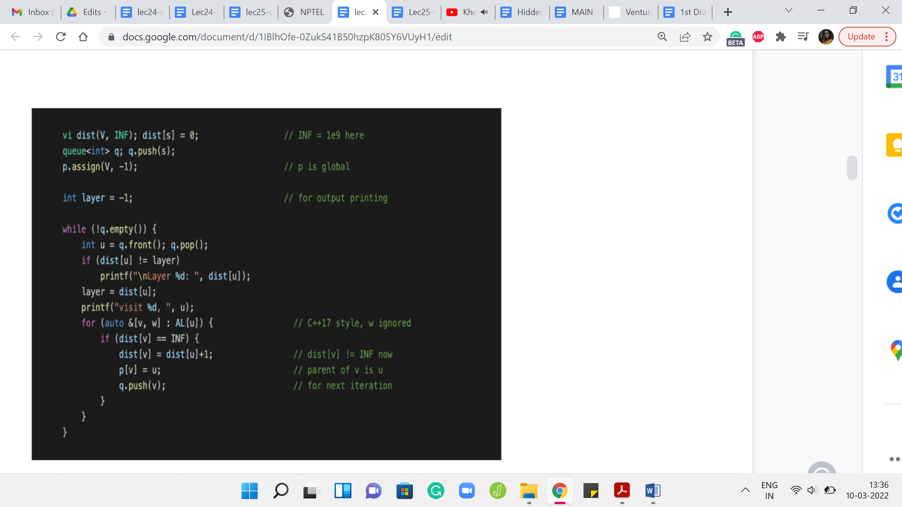
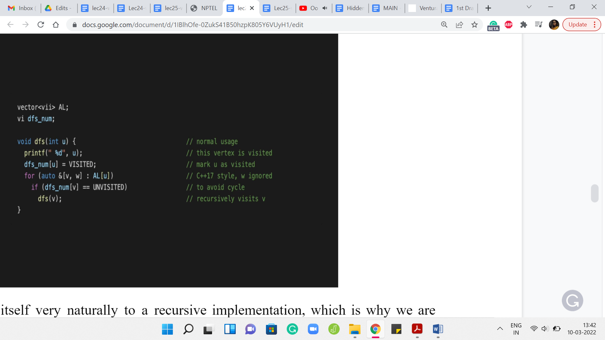
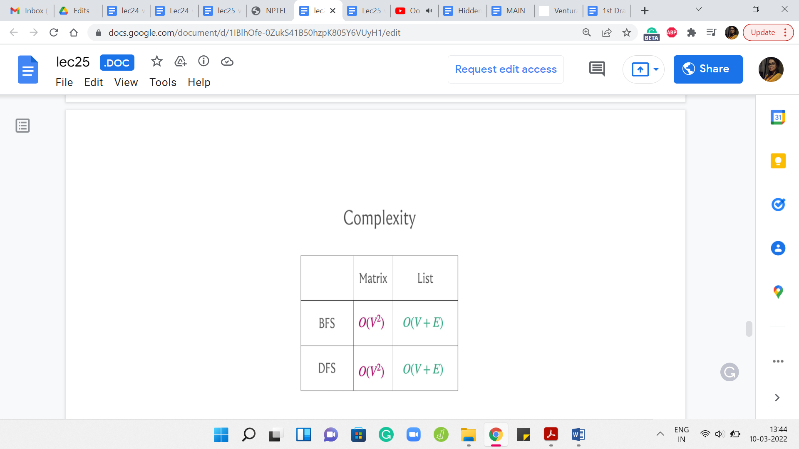

Graph Foundations - Module 1 (BFS and DFS)
Lecture - 25
Graph Foundations - Module 1 (BFS and DFS)
(Refer Slide Time: 00:30)

Welcome back, to the second segment of the first module in week 5. We are talking about graph traversals this week and in this segment, we will actually talk about the breadth-first and the depth-first traversals of a graph. In the previous module, we talked about how graphs are represented. We talked about the adjacency matrix and the adjacency list representations and we also had sort of a very intuitive and vague sort of overview of how these traversals might work.
So, if you have not seen the first segment, then it might be advisable to watch that first unless you are already familiar with how adjacency matrices and adjacency lists work, in which case you could just start off with this one directly. In fact, if you are already comfortable implementing BFS DFS yourself, then you could even skip this lecture and jump ahead and look at the problems directly.
There are three problems that we discuss in this module and if that leaves you hungry for more then please look at the extra section on the course website and you will find more problems to try out your BFS DFS skills on. Now with all that said, let us get started here. We will basically be focusing on what these traversals do and not so much on proving interesting properties that these traversals have. We will not be getting so much into some very common and well-known applications of these traversals.
We will give you a bucket list of these things without really explaining them in any detail and there are links in the description of this video where you can find out more if you are interested. In case you have not seen these topics from a previous course that you have done, you might actually be interested in following up and learning a little bit more because these things are pretty foundational and really interesting. I would encourage you to actually look things up a little bit beyond what we are able to fit into this video here. With that said, let us start first with a breadth-first search.
Remember, for breadth-first search, we said this is like when you start off reading a page on Wikipedia, you open all the links that you see in background tabs. Then you close the page and then you start off with the first page that you have opened and then you do the same thing.
(Refer Slide Time: 02:31)

Let us take a look at what this might look like on an example. Here is an animation that shows you the sequence in which a BFS traversal would visit the vertices of this graph. Let us take a closer look at what happened. The story begins at the vertex labeled 1 and that is the first vertex that you mark as a visited vertex.
Your known territory is just this first vertex. Then you look at all of the neighbors of 1 and you pick those that you have not visited yet. Since all of these vertices are new to you right now, all the three vertices 2, 3, and 4 get pushed on the queue. Now, after you have explored all the neighbors of 1, you basically move on from 1.
This is like saying you close the first page that you were reading and now you move on to the next thing on the queue. In this case, assuming you load up the vertices in lexicographic order, the next vertex in the queue is 2. Now when you visit 2, you again want to look at a neighbor of 2 that you have not seen before. So, 2 has two neighbors in this graph, 1 and 5.
But since 1 is a vertex that you have already seen, you ignore 1 and you basically explore the vertex labeled 5, by pushing it to the end of the queue. Now you have completely explored vertex 2, you move on to the next vertex in the queue, which is vertex 3, and speeding up the explanation a little bit 3, will end up pushing 6 and 7 on the queue. You will push off 3 and turn to 4 because that is the next vertex on the queue.
Notice that at this point 4 will bring in 8, which is its only unvisited neighbor to the back of the queue and once it hops off the queue, the next thing on the head of the queue is 5, and so on and so forth. In the description of this video, you can find a link to a website called visualgo dot net and they have a really nice interface where you can draw your own graph and you can simulate what the BFS traversal would do, in what order it would visit the vertices and so forth.
If you really want to get a feel for how the algorithm executes in different kinds of graphs, then please feel free to try this out. It is also a good idea to just sit down with pen and paper and work through some examples of specific kinds of graphs. For example, what would BFS do if you had a complete graph? That would be a graph where every possible edge is present, every pair of vertices is connected with an edge. In this case, notice that no matter where you start, the BFS traversal would basically finish off in one layer.
Because every vertex is adjacent to every other vertex. Irrespective of your starting point, you just kind of visit everything in one shot. You could contrast this with what DFS would do if it was working with such a graph. I think it is really useful to play around with a few examples. At this point, I would like to switch gears a little bit and actually talk about the implementation for BFS.
(Refer Slide Time: 05:41)


To begin with, we have a ‘distance’ vector that is going to help us keep track of how far away the vertices are from the source. When we have not seen anything, at this point, every vertex is at distance infinity, we just do not know anything about how close these vertices can be. Although I am not formally defining distance here, this is something that you can look up and there are links in the description of the video in case this is not a familiar notion.
But for now, you can just intuitively think of the distance between any two vertices in a graph as being the length of the shortest path between them. Where a path is exactly what you think it is – a sequence of vertices that you can follow to get from one vertex to another. You want that there is an edge connecting the consecutive vertices so that you can actually walk along the path.
To begin with, as I said, the distance is unknown to us, in the sense that we have not really started exploring this graph at all. We started the source vertex. So, we initialize the distance of ‘s’ from itself to be 0 because you do not have to walk around from s to reach s, that is exactly where you are at already. For the remaining vertices, as we start actually discovering these vertices, we will update the distance vector as we go along.
The other thing that we want to keep track of is some sort of a parent array and this essentially tells us who is the reason for our discovery. The parent of any vertex other than the source is going to be the vertex that pulled this vertex into the limelight. That is the one that caused the latter vertex to be discovered by the traversal.
This will become clearer as we go along. But just as an example, notice that all the neighbors of the source vertex from where you start the BFS have the source vertex as their parent because, in the very first step, the source vertex is going to immediately find all of its neighbors in one shot.
All the neighbors of the source vertex will point to the source as the parent. Everything that you see typically in the second layer of a BFS traversal, all of those vertices will have some vertex in the first layer of the BFS traversal as their parent and so on and so forth. We will update these parent pointers as we go along. Although we will not have any immediate use for them, it is just good to know that we can keep track of them. These may come in handy depending on the application that you might be working with.
The rest of it is fairly routine initialization. We want to keep track of the layer numbers in a variable called ‘layer.’ This is mostly so that we can do some pretty-printing of the BFS traversal. We also have a queue, which is going to be the main data structure that we use to actually execute the traversal.
We initialize a queue to being ‘empty,’ to begin with, and then we push the source vertex onto the queue. That is the only thing that the queue has in the beginning and now let us see how this goes. We are going to keep processing vertices, while the queue still has vertices on it. That is the outermost while loop and now what we want to do is basically pull out the vertex that is at the front of the queue.
Let us call that vertex ‘u.’ We read off the front of the queue and we also push this vertex out of the queue and now what we want to do is basically go over all the neighbors of ‘u.’ This is an adjacency list representation. This is one way of going over the neighbors of ‘u.’ The variable ‘w’ essentially stores the weight of the edge from u to v and this is something that is not really relevant to the BFS traversal. We are just going to ignore that and we are going to worry about ‘v.’
What do we want to know about v? This is something that we are interested in processing if we have not seen it before. Notice that this is very important. You only process unvisited neighbors of the vertex that is currently at the head of the queue. If you have seen a vertex before and you try to process it, then you will have a BFS implementation that is just going to potentially run forever. That is a very dangerous thing to do.
This check here is very, very crucial. We are going to check if we have visited v already and one way to do that is to check what is the distance of v from the source. If this distance is infinity, which of course is coded as some large finite number, as long as this number is much bigger than ‘n,’ or even strictly bigger than ‘n,’ this will be a valid implementation. If the distance of v is set to infinity, then we know that we have not seen this vertex yet and that is when we will process it.
Otherwise, we do not do anything and we just continue with the ‘for’ loop. Once we exhaust that, we, sort of, get out and go back to the while loop. That is essentially the overall structure. But what if v is a vertex that we have not seen before? What does it mean to process the vertex v?
What we want to do is, first of all, make sure that we set the distance of v appropriately so that we put it on record now that v is a visited vertex. What is the distance of v? Well, it is going to be the distance of the parent + 1. It took you a distance of ‘u’ many steps to come from the source to the vertex ‘u,’ and now it is going to be one extra hop to reach v by taking the edge from u to v.
That is the distance of v from the source, and setting it in this way also implicitly puts it on the record, as we were saying earlier, that v is now a visited vertex and we do not have to visit it again in case it should come up later. The next thing that we want to do is to set the parent pointer of v.
We ask ourselves: Who was the vertex that was responsible for v joining the queue? Well, v is going to join the queue because u discovered it. The vertex ‘u’ discovered it. We are going to set the parent of v to u and that is going to fix up the parent point information. To truly wrap up the processing of the vertex v, what we need to do is add v to the end of the queue. This way, when it is v’s turn, v can pull in all of its neighbors, at least the ones that have not been visited so far.
That is why it just hops on the bandwagon, so to speak. The rest of this code is mostly routine things to do with printing the order in which the vertices are being traversed. Let us take a quick look. If you just wanted to print out the vertices that are being visited by the BFS traversal, in the order in which they are processed, you could just fill in this blank space with one simple print statement, which just prints the value of ‘u.’
But you might also want to print the layer numbers whenever you change a layer. Let us say when you go from the first layer to the second or from the second to the third, and so on. Let us think about when does the layer number change. We have a variable called layer where we are sort of tracking the current layer numbers, so to speak. Whenever we encounter a vertex whose distance is different from the layer number that we have cracked so far, that is when we know that the layer number needs an upgrade.
That is when it is worth printing the layer number. Let us say that we see that the distance of the vertex that is being processed currently is different from the layer number. Then let us just go ahead and print the value of the distance of ‘u’ that is going to basically signal the current layer number. We also want to make sure that ‘layer’ is set to the distance of the vertex so that the variable also carries the correct information about which layer we are in. For the most part, as long as you are within the same layer, as long as you are processing vertices that are at the same distance from the source, this piece of code here ‘layer equals a distance of ’u’’ will not really change anything.
But every time you do actually switch layers, the ‘if’ condition just before this line will catch that and it will basically print the layer number of the new layer to the output. That is how this works. Essentially, if you were to run this code, you are going to just see a nice output with the layer numbers and after each layer number, you are going to see a list of vertices that were visited at that layer.
Once again, do try out visualgo, if you just want to see how this code plays out on some pre-written examples or your own examples. That is an exercise that is definitely worth doing and you could also just run this code for yourself on examples that you come up with. Make sure to combine this with the actual implementation of the graph as an adjacency list and that you read your input and output appropriately. You could also refer to the GitHub repository for the competitive programming book from where this snippet of code has been borrowed. There is a link to that in the description of this video as well.
So, that wraps up our discussion on BFS and now let us turn to depth-first search, which is a different style. Going back to our Wikipedia browsing analogy, we said that this is where the moment you see a link that is fresh that you have not visited before. While you are browsing Wikipedia, you click on it and that is the link that you start reading. There as well, if you see a link that you have not visited before, you are going to click on it and so on and so forth.
The only time that you have some respite is when you finally land on a page where you have no more links. There is nothing else to follow and then you start backtracking and working your way back up.
(Refer Slide Time: 16:25)

Let us, again, take a look at an example of a DFS traversal playing out. I will not go through this step by step but I will just let you watch the animation and hopefully, it tallies with your intuition of how you expect the DFS traversal to behave. After this, we will go ahead and take a look at the implementation.
We started at the route, the topmost vertex and as you can see, you just keep going all the way down. You go from 1, 2, 3, 4 and then you walk your way back up to 1. Then you take the second neighbor of 1, which is 5 and you go down the path 1, 5, 6, 7. Then you backtrack all the way up to 5 now and 5 has one other unvisited neighbor. You visit 8, and then you walk your way back up all the way to 1. Then you explore 9 followed by 10. Hopefully, this is reasonably intuitive as to what DFS is doing. Let us just take a look at how you would write this in code.
(Refer Slide Time: 17:25)

Now DFS lends itself very naturally to a recursive implementation, which is why we are isolating its implementation to a function called DFS. The implementation that we saw for BFS could be isolated into a function call as well. But you could also just put it in the main body and it would not make any difference.
Of course, DFS also can be implemented in a more iterative style and you could directly use, for instance, a stack-based data structure to simulate what is going on in this recursive version of the program, which I think is just closer to the semantics of how we described it. That is why we are going to do the recursive version because it is just easy to tally this with the way that we have described how DFS works.
But with just a little more work, you could also come up with a non-recursive implementation. I am going to leave you with a few pointers to do search variants, which you could go and lookup. But for all practical purposes, I think you could work with either one of them and it should not really matter.
What is going on here? Let us say you invoke DFS, starting at a vertex ‘u.’ Notice that what we need in terms of the global variables is, of course, access to an adjacency list representation of the graph. This could also be an adjacency matrix representation, but I am just going with an adjacency list as the default because that is going to be the more efficient choice here in general.
Apart from this, just like with BFS, where we had a distance array, which helped us distinguish between vertices that have been and have not been visited, here also we are going to maintain an array which in this case, is called dfs_num that is going to keep track of whether a vertex was visited or not.
In this code, you can see the words ‘visited’ and ‘unvisited.’ These are constants that have been declared separately that you do not see on your screen. Once again, there is a link to the repository from where you can see the whole code. This is just a snippet and it may not run if you were to just try to work with it as is.
But in any case, hopefully, the spirit of it is clear. The dfs_num array is going to tell us if a vertex is being visited or not and how does DFS work? Well, just going to ignore the print statement which just tells us, where we are in the DFS traversal. But when we do the DFS on ‘u,’ what we essentially want to do is go through the neighbors of u, till we find the first unvisited neighbor and then just perform a DFS starting and at that vertex.
At some point, you are going to reach a vertex, which does not have any unvisited neighbors. All of its neighbors have been visited before. At this point, basically, the if condition within the for loop will never really execute. The for loop exhausts itself and you just return control to wherever the function call was coming from. That is essentially your dead end and that is when you will start your backtracking journey.
This is, of course, a very bare-bones implementation of DFS. You could enhance this to track more information about the vertices such as, for instance, you could keep track of the times at which you visited the vertex and at the time at which you decided to go back when you have exhausted all of its neighbors. You could track all of this auxiliary information, and depending on the application that you are working with, this extra information can turn out to be really valuable and relevant.
One thing that I did not mention is that the first thing that you should do when you do DFS of ‘u’ is to make sure that you mark this vertex as visited. This is, again, pretty critical. If you forget to do this, then you might accidentally again end up in an endless loop because you have not kept track properly of which vertices you have visited and which you have not. The moment you know that you are going to do a DFS starting at a particular vertex just make sure that you update its visited status so that you do not try to visit it again. You do not try to do a DFS starting from there, a second time when you potentially come in from a different vertex.
Hopefully, this implementation makes sense. I think it covers all of the aspects that we discussed when we were talking about the algorithmic idea of doing a DFS traversal informally. Hopefully, it tallies with your intuition. Once again, you can go to visualgo to actually experiment with how DFS plays out on actual examples. You could either create your own examples or look at some of the ones that are already built into the interface.
Have some fun with that and you could also play around with how a BFS and DFS work on directed versus undirected graphs. Typically, these traversals do not really account for weights on edges or vertices in any way. That kind of information is completely ignored. The behavior of these traversals would be the same whether your graph had weights on the edges of the vertices or it did not.
But the orientations can definitely lead to different outcomes in the sense that if you have a directed graph and you run say, a DFS, that run would look different from the run on the underlying undirected graph. Let us say you took an eraser and you erased all the arrowheads. You are now left with an underlying undirected graph, so to speak and if you run a DFS on that, that is going to look very different from what happened on the directed version, typically. It is a good idea to play around with examples just to get a sense of some of these things. Now that we have seen the implementations, let me just talk very briefly about the complexity.
(Refer Slide Time: 23:17)

It turns out that if you were to use the adjacency matrix representation then the worst-case running time can be as bad as order n2. But if you use an adjacency list representation, then your worst-case complexity is order n + m, where I am using n and m to refer to the number of vertices and edges respectively.
Now, you might say that there could be graphs where m is as bad as n2. For example, that would surely be the case if you were working with a complete graph and so on. Of course, this is true. If you were going to view this purely from the perspective of worst-case complexity, then these running times are not all that different.
But the running time order V + E would generally be superior because it accounts for the structure of the graph and would generally give you a much better performance on graphs that happened to be sparse, that do not have as many edges, and so on. This is an important difference to keep in mind.
I will say that coming up with this performance guarantee to see that the running time is in fact order n + m does require a little bit of work because if you were to just look at the code for BFS DFS and if you analyze it naively, then it will not be very clear as to why the running time can be bounded as being order n + m.
So, it does require just a little bit of thought. But the very fact that the complexities are different for the matrix and list representations should give you a hint as to how to analyze the complexity so that you get to this conclusion. But in case it is not clear once again, there are a number of pointers for resources where you can find out more about how we typically analyze the complexity of these traversals and why we get to essentially what I am claiming here.
With this out of the way, the major takeaways are that you could use either BFS or DFS. In most scenarios, both of these traversals would be equally applicable. In some scenarios, one would be more natural than the other.
In general, it is a good idea to be comfortable implementing either of them and in most cases, you would be better off sticking to an adjacency list representation, as opposed to an adjacency matrix representation. Especially more so in CP, where if the number of vertices you are dealing with is more than a few 1000 vertices, as we mentioned earlier, this is anyway prohibitively expensive, even from a space and memory perspective.
Just keep these things in mind and, you know, play around with the BFS and DFS implementations that we have discussed in this video. I will just spend a couple of minutes more telling you about some common applications of BFS DFS without actually getting into any of the details. But just in case you are curious about what these traversals are good for and how can you use them other than just exploring the graph. It turns out that there are a lot of interesting things that you could do with BFS DFS.
(Refer Slide Time: 26:26)

Here are just some of the things that you could do with these traversals. This is by no means an exhaustive list. It is a small subset of the very many applications that are known for BFS DFS. Some of these terms may be unfamiliar. Things like, for instance, bipartiteness or topological sort or what does it mean to talk about distance or connected components – in case some of this is unfamiliar, you could look them up.
In the upcoming modules, we will talk a little bit about what it means for a graph to be connected. We will define the notion of distance and in the assignment, you will have an encounter with the notion of ‘topological’ sort. In fact, in the very next module, we are also going to look at what it means for a graph to be bipartite and what it means for a graph to have a cycle and therefore, you would also know what it means for a graph to be acyclic.
Some of these terms will become clearer as we go along in case they were not already familiar, and once again, we will not really be getting into a lot of proof. If you are really curious about why these algorithms work in these contexts, it would be a good idea for you to look up some of the reference material that you can find on the course website, as well as in the description of this video.
(Refer Slide Time: 27:44)

Speaking of statements without proof, I will just make a few comments here again without actually formally arguing them. These are just some properties of these traversals that are useful to keep in mind. The first one is to observe that in a BFS, you cannot have edges that jump levels.
Of course, you can have edges between consecutive levels, but any more of a gap and you cannot really have edges, for example, going from level 5 to level 9. The reason for this is fairly intuitive. If you did have such an edge, then the other end-points sitting at level 9 should have really been pulled up in level 6 already. It is not very difficult to translate this intuition into an argument for why you will not have edges between vertices that are more than one layer apart.
In a BFS, just remember that all edges either go across consecutive levels or they are cross edges, meaning they are edges within the same level, but you are not going to have edges of any other kind. Now, let me also just quickly point out that some people will use terminology like tree edges and non-tree edges to distinguish between the edges that were actually accessed by the traversal.
The edges that were involved, for example, when you were pulling in a new vertex into the queue. Let us say your current vertex, the head of the queue, is the vertex u. You are looking at an unvisited neighbor v and you are pushing it to the tail of the queue. That edge between u and v, that is going to be a BFS tree edge because the traversal actually went across that edge.
But there would be many other edges in the graph that do not feature in the traversal tree. Those would be the non-tree edges and some people would call them the graph edges. In the context of a BFS traversal, you would basically know that those are the edges that did not show up on the tree. That is the same for DFS as well.
Now in a DFS traversal, on an undirected graph, you would not have cross edges. By cross edges, I mean edges between pairs of vertices that do not have a direct ancestor-descendant relationship between them. You could have back edges. In a DFS traversal, you could definitely have edges that cut across multiple levels if you like. All the levels are a bit less clear in the context of DFS, but these edges can definitely be present.
But in undirected graphs, you will not have edges that basically cut across two different branches of the tree in some sense. This is all very informal and you will have to convince yourself about why this is the case. But once again, there are ways of proving these things formally. There are even ways of articulating these things more precisely than I am doing here. But this is just to give you a general picture of the kind of properties that you might expect from these traversals.
As I said, in BFS, you could use this traversal for actually recording distances, which are essentially the length of the shortest paths from the source to the current vertex. The layer number of a vertex essentially tells you what its distance is from the place where you started the traversal.
Again, requires an argument! But this can be shown without too much difficulty and that is a very interesting property of BFS. It is completely useless if you want to track shortest paths accounting for edge weights. That is going to be the subject of our discussions next week. But for now, you could still use BFS if your edges do not have weights and you are still somehow interested in distances.
Finally, if you look at the last layer of a DFS traversal, you should notice that there are no edges between the leaves. The reason is that if you did have an edge, then well you could have gone deeper in one of those leaves and it would not be a leaf really. Once again, you could say this more properly. But I think this is an interesting property that might just come in handy in some situations.
I just wanted to leave you with some of these nice properties that these traversals have. Of course, there are many more. Think of this as some sort of a sampler and once again, please do look up the links for more information. If you are already fairly comfortable with BFS and DFS, please do look at the extras page for other problems that you can try while you are at it. So, thanks very much. In the next three videos, we are going to solve three different problems that take advantage of these traversals. I will see you there, and let us wrap this up here. Bye for now!